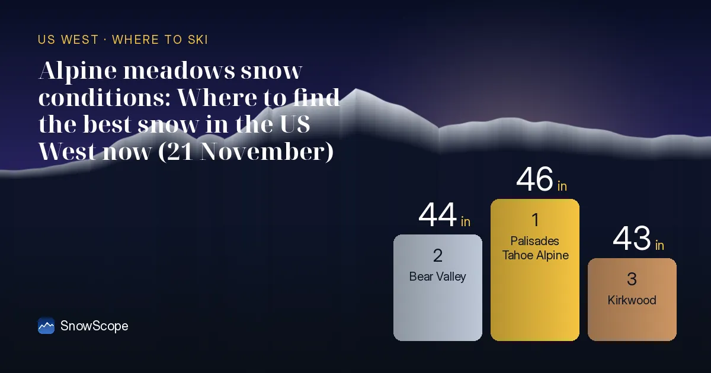
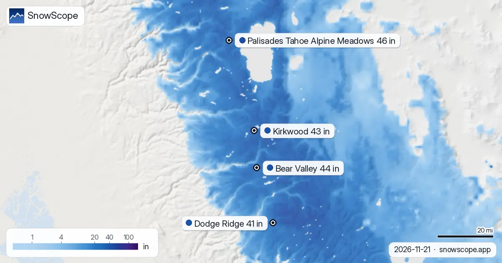
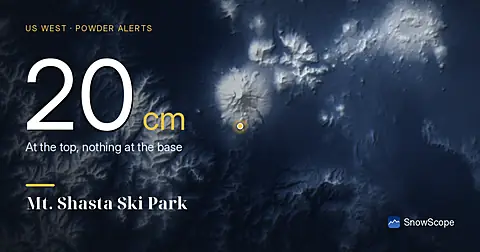

Alpine meadows snow conditions: Where to find the best snow in the US West now (21 November)
Three resorts stand out for their early-season snow depth and fresh arrivals: Kirkwood, Bear Valley and Dodge Ridge. As of Saturday 21 November, Kirkwood tops the group with 109 cm (43 in) on its upper slopes, but all three received substantial snow in the last three days and sit well above their normal depth for this time of year.
See the live snow forecast for Kirkwood in the SnowScope appSnow depth, powder alerts and the 3D map, free.
Which height holds the most snow
Height matters hugely in November. At Kirkwood, the upper slopes hold 115 cm (45 in), the mid-mountain zone 114 cm (45 in), and the base 99 cm (39 in). The 16 cm (6 in) difference between top and base shows how the terrain's elevation shelters snow from wind and sun.
Bear Valley shows a steeper height gradient: 112 cm (44 in) at the top (2,586 m / 8,484 ft), 94 cm (37 in) mid-mountain (2,305 m / 7,562 ft), and 82 cm (32 in) at the base (2,024 m / 6,640 ft). Lower elevations warm faster in November, so plan your day on the higher slopes first.
| Resort | Snow depth | New snow, 72 h | Coming, next days | Top |
|---|---|---|---|---|
| Kirkwood | 43 in (109 cm) | 25 in (63 cm) | 2 in (4 cm) | 9,462 ft (2,884 m) |
| Bear Valley | 44 in (111 cm) | 24 in (60 cm) | 2 in (4 cm) | 8,484 ft (2,586 m) |
| Dodge Ridge | 41 in (105 cm) | 25 in (63 cm) | 1 in (3 cm) | 8,143 ft (2,482 m) |
| Palisades Tahoe Alpine Meadows | 46 in (116 cm) | 20 in (51 cm) | 2 in (6 cm) | 8,494 ft (2,589 m) |

Fresh snow from the last three days
Kirkwood received 63 cm (25 in) in 72 hours ending 21 November, with the heaviest falls on 19 and 20 November. Bear Valley picked up 60 cm (24 in) over the same period. Dodge Ridge gathered 63 cm (25 in) in three days.
These numbers come from water stored in the snowpack and from stations nearby: at Carson Pass near Kirkwood, 94 cm (37 in) lay on the ground on 19 November with 18 cm (7 in) falling in one day.
How this compares with past Novembers
On this date in past winters, Kirkwood normally held 22 cm (9 in) at mid-elevation. Today's 111 cm (44 in) at the same height beats 45 of the last 46 Novembers 21st. Early snow like this is rare and helps the lower runs, which usually stay thin until December.
Bear Valley's mid-slopes carry 101 cm (40 in) today against a typical 12 cm (5 in), putting it deeper than 46 past seasons out of 46. Dodge Ridge sits at 84 cm (33 in) mid-mountain, far ahead of its 12 cm (5 in) November average.
What the forecast adds by Tuesday
Between 22 and 24 November, Kirkwood will gain 4 cm (2 in), Bear Valley 4 cm (2 in), and Dodge Ridge 3 cm (1 in). These small gains reflect a quieter weather window, though forecasts several days ahead can shift. Check the map again on Monday before you travel.
Palisades Tahoe Alpine Meadows will see 6 cm (2 in) through Tuesday, slightly more than its three peers but still modest growth for a three-day span.
Snow line and slope aspect
On 21 November the freezing level at Kirkwood ranged from 440 m (1,444 ft) to 2,230 m (7,316 ft), well below the base. Any rain or sleet that falls will turn to snow once it reaches the mountain, so the snowpack should grow, not shrink, through the next few days.
North-facing slopes hold their snow longer than south-facing runs in November, when the sun is low but still powerful. Steep shaded slopes at higher elevations are your best bet for preserved snow by mid-week.
Safety and early-season snow
Avalanche danger in the Kirkwood area stands at level 3 on the five-point scale (see avalanche.org). Before leaving the piste, read the full bulletin for your zone.
November snow is thin and may hide rocks or grass just below the surface. Stick to groomed runs and check the resort website for which lifts and runs are actually open today.
Tips for skiers
- Start your day on the upper slopes (above 2,500 m / 8,200 ft) where snow is thickest; lower elevations warm and thin first in November.
- Seek north-facing terrain: it shades better from November's low sun and preserves edge hardness longer than south-facing runs.
- Kirkwood's Carson Pass station reported 94 cm on 19 November; use that as a local benchmark if you ski nearby.
- Early-season coverage is patchy: groomed pistes are your safety margin. Avoid off-piste runs until you read the official avalanche bulletin for your area.
- Forecasts shift in a few days: check the map again on Monday 23 November before committing a trip for Tuesday or Wednesday.
About these numbers
Resort snow depths are the deepest snow on the resort's upper slopes on the date shown; they are estimates for an area, not a measurement at one point. Forecasts can change. Always read the official avalanche bulletin before going off-piste.
Official avalanche bulletins: avalanche.org (US national portal)
Cite this report
For research, teaching or the press: the numbers and charts are free to reuse under CC BY 4.0 with this citation.
SnowScope (2026), Alpine meadows snow conditions: Where to find the best snow in the US West now (21 November), https://snowscope.app/blog/en/2026/11/us-west-where-to-ski-best-snow-21-november-2026.html, accessed 2026-11-21
SnowScope (Atlas Labs). (2026, November 21). Alpine meadows snow conditions: Where to find the best snow in the US West now (21 November). SnowScope snow reports. https://snowscope.app/blog/en/2026/11/us-west-where-to-ski-best-snow-21-november-2026.html
BibTeX
@misc{snowscope2026uswestwheretoskibestsnow,
author = {{SnowScope (Atlas Labs)}},
title = {Alpine meadows snow conditions: Where to find the best snow in the US West now (21 November)},
year = {2026},
month = nov,
howpublished = {\url{https://snowscope.app/blog/en/2026/11/us-west-where-to-ski-best-snow-21-november-2026.html}},
note = {Published 2026-11-22 10:03 UTC; accessed 2026-11-21}
}· CC BY 4.0 · Methods, data and tools →
Kirkwood: snow and temperature by height, this winter vs last (tools) →
Follow Kirkwood
Free: a message when fresh snow is coming, and the forecast every morning.
More snow reports

Palisades Tahoe Alpine Meadows leads the US West with 30 in (75 cm) on upper slopes. Fresh snow and a strong forecast make it the weekend pick for 18 November.

Telluride leads the US West with 125 cm on upper slopes on 19 November. Snow spread across the region to 782,430 km².

Mt. Shasta Ski Park's upper slopes hold 20 cm (2026-11-13), but the base is bare with rain below 2020 m. Next: 32 cm forecast.